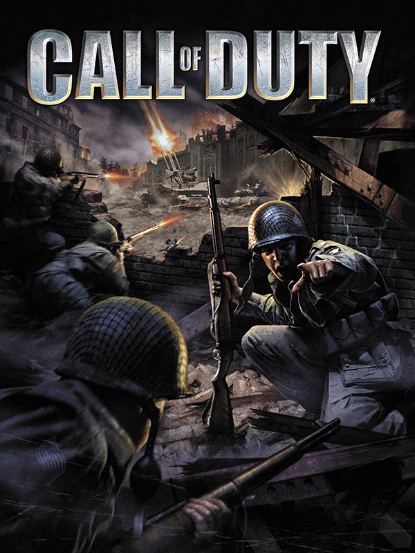

 |
|
| Tiempo de juego | 4m 6s |
| Última actividad | 13/11/2025 15:08:32 |
| Añadido | 23/9/2025 0:23:05 |
| Modificado | 10/12/2025 11:25:13 |
| Estado de finalización | Jugado |
| Librería | Playnite |
| Fuente | |
| Plataforma | PC (Windows) |
| Fecha de lanzamiento | 29/10/2003 |
| Puntuación de la Comunidad | 81 |
| Puntuación de la Crítica | 87 |
| Puntuación de usuario | |
| Género | Shooter |
| Desarrollador | Infinity Ward |
| Editor | Activision Aspyr Media |
| Característica | Multiplayer Single Player |
| Enlaces | Steam |
| Tag | Voz y Texto en Español |
Cuando "Medal of Honor" nos mostró que un shooter podía ser una película, llegó un grupo de sus mismos creadores y dijo: "podemos hacerlo mejor". El primer "Call of Duty" no fue una secuela, fue una revolución. El juego que nos sacó del rol del "lobo solitario" y nos metió de lleno en el barro, como un soldado más en el medio del caos de la Segunda Guerra Mundial.
La genialidad más grande fue que nunca peleabas solo. Por primera vez, tenías un pelotón de compañeros controlados por la IA que no eran simples adornos. Se cubrían, te daban fuego de supresión, gritaban órdenes y reaccionaban a lo que pasaba, haciendo que el campo de batalla se sintiera vivo y aterrador. Dejaste de ser Rambo para ser un engranaje en la maquinaria de la guerra.
Y la campaña era una obra de arte. Vivías la guerra desde tres perspectivas distintas: un paracaidista yanqui en Normandía, un comando británico en misiones de sabotaje, y un conscripto ruso en la masacre de Stalingrado. Esa campaña soviética, arrancando desarmado mientras tus compañeros caen a tu lado, nos marcó a fuego a todos.
Construido sobre el motor de Quake III, el gunplay era una manteca. Cada arma se sentía potente y precisa, y la introducción del "apuntar con la mira" (ADS) como mecánica central cambió las reglas del juego. No era solo un espectáculo, era un shooter increíblemente sólido.
"Call of Duty" es el cimiento, la piedra fundamental sobre la que se construyó una de las franquicias más gigantes de la historia. Es una clase magistral de inmersión y diseño de campañas, una experiencia intensa y cruda que definió el ADN del shooter moderno.